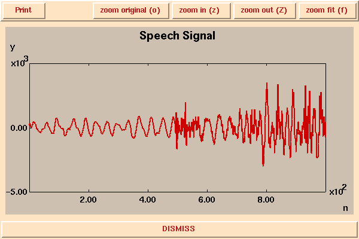

In this demonstration, a speech signal is manipulated by sampling it in various ways. The speech signal is the sentence, "I'm sorry Dave, I'm afraid I can't do that," spoken by HAL, the computer in 2001 Space Odyssey. You will hear the following samples:
The speech waveform is really just a list of numbers. Here is a segment of speech consisting of 1000 samples:

If we zoom in to the the middle of this segment, the signal looks as follows:
This segment shows a transition between a part of the signal that is roughly periodic to one that is much noisier. The roughly periodic part corresponds to a voiced sound, like "aaaa", whereas the noisy part corresponds to an unvoiced sound, like "ffff". This segment is at the transition between voiced and unvoiced in the "af" of "afraid". To emphasize that this waveform is constructed from samples, we can plot each sample as a dot:
In the fourth audio sample above, a set of samples at 4 kHz is interpolated to get a new set of samples at 8 kHz. The interpoloation of the waveform can be understood intuitively by looking at the following picture from the aliasing demo.
If the blue signal represents a set of samples, then the red signal is an interpolated version. The waveform is smoothly interpolated between the given samples.